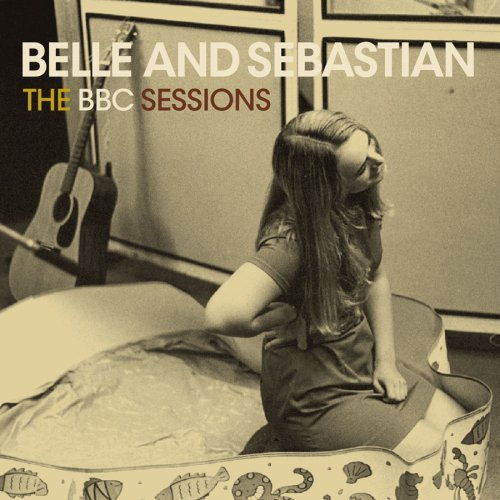
01The Boys Are Back In Town (orig. Thin Lizzy)
Belle & Sebastian – The BBC Sessions (2008)
orig. Live
 02
02
Third Uncle (orig. Brian Eno)
The Feelies – December 14 1977 CBGB's, NYC (1977)
orig. Live
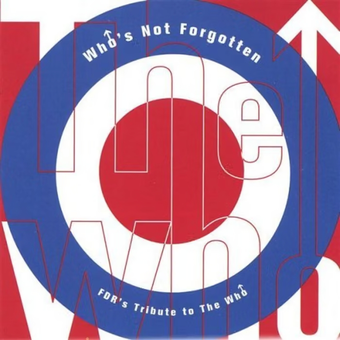
03Baba O'Riley (orig. The Who)
Guided by Voices – Who's Not Forgotten, FDR's Tribute to the Who (2000)
orig. Live Iowa City
 04
04
Sheena Is A Punk Rocker (orig. The Ramones)
Hüsker Dü – The Living End (1994)
orig. Live
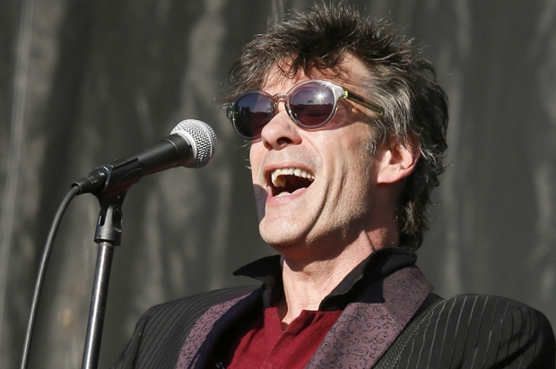
05Alex Chilton (orig. The Replacements)
Paul Westerberg – Guthrie Theater Minneapolis, MN July 1 2002 (2002)
orig. Live
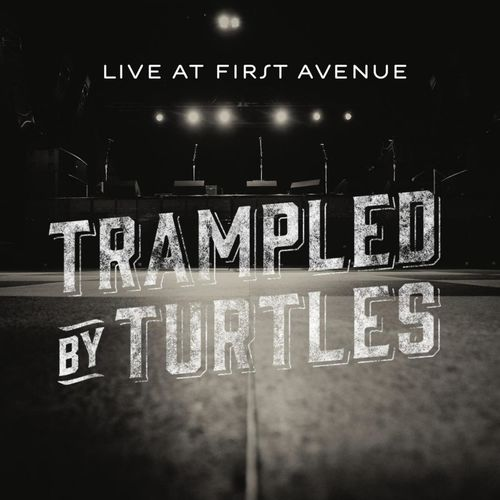
06Where Is My Mind? (orig. The Pixies)
Trampled by Turtles – Live at First Avenue (2013)
orig. Live
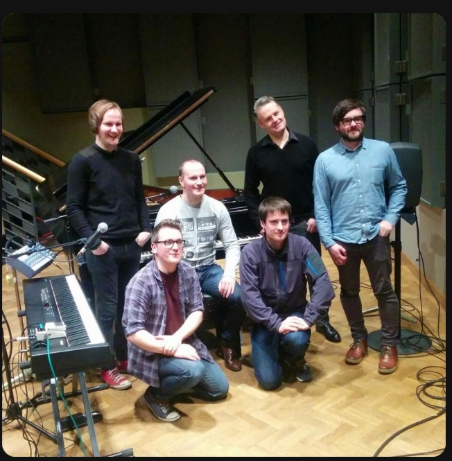
07Cherry Coloured Funk (orig. Cocteau Twins)
Call To Mind – Vic Galloway Session (19/04/10) (2010)
orig. Live
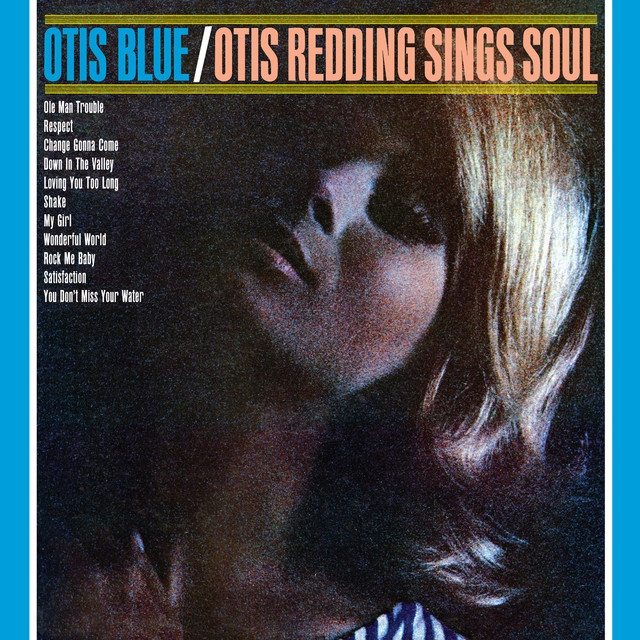
08Satisfaction (I Can't Get No) (orig. The Rolling Stones)
Otis Redding – Otis Blue: Otis Redding Sings Soul (2008)
orig. Live at the Whisky, 1968
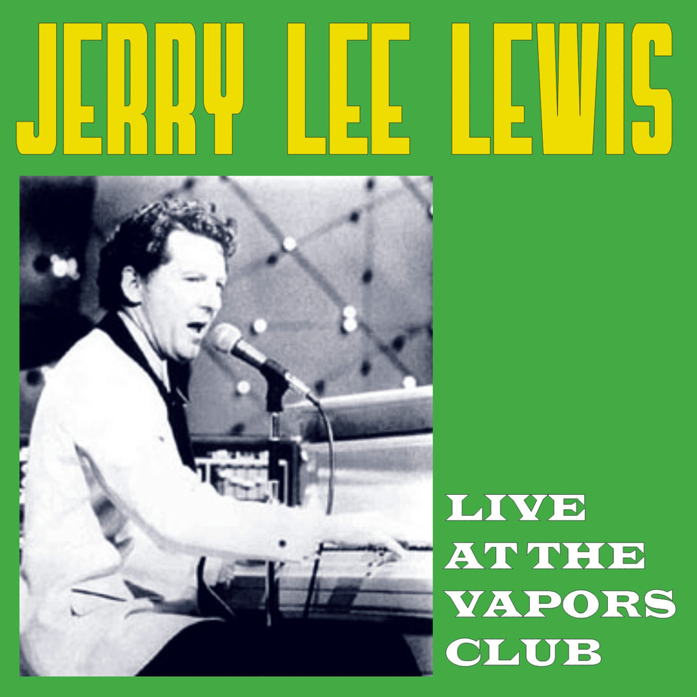
09Me And Bobby McGee (orig. Kris Kristofferson)
Jerry Lee Lewis – Live At The Vapors Club (2009)
orig. Live
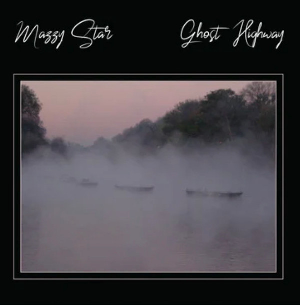
10Blue Flower (orig. Slapp Happy)
Mazzy Star – Ghost Highway (2015)
orig. Live
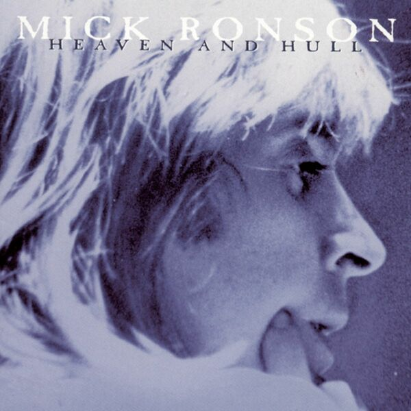
11All The Young Dudes (orig. Mott the Hoople )
Mick Ronson – Heaven And Hull (1984)
orig. Live
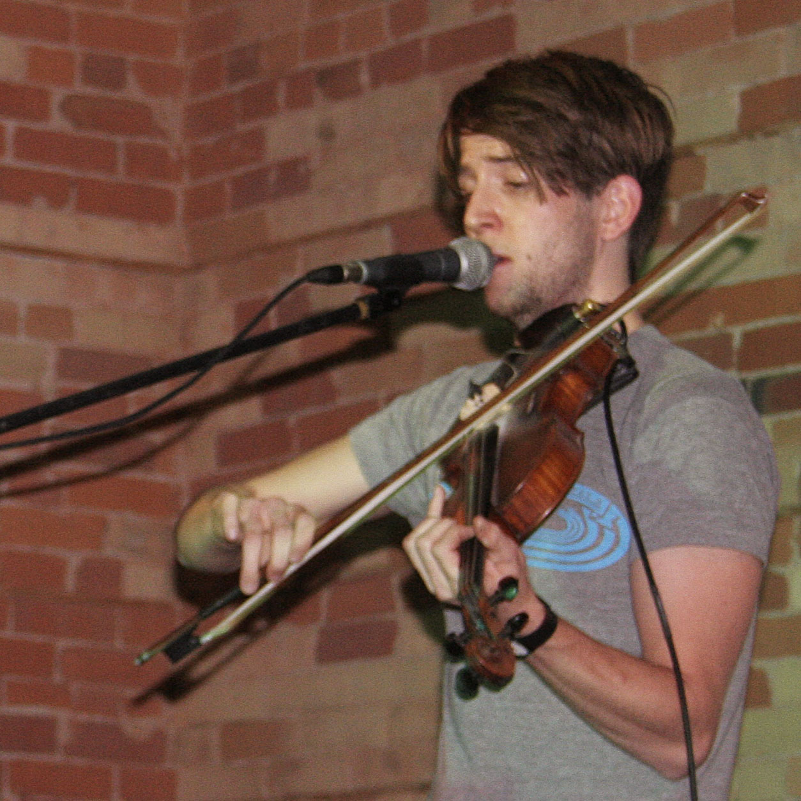
12Power of Love (orig. Céline Dion)
Final Fantasy (2008)
orig. Live @ Gladstone Hotel on January 10, 2008
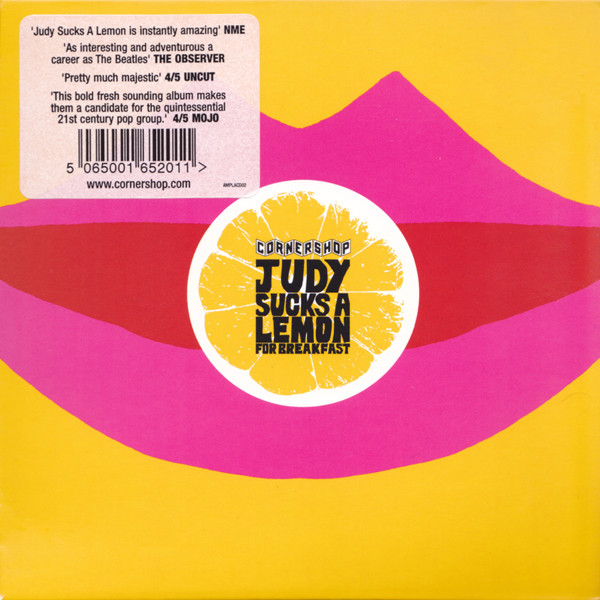
13Waterloo Sunset (orig. The Kinks)
Cornershop – Judy Sucks Lemon For Breakfast (2009)
orig. Live on Culture Show 09-06-07
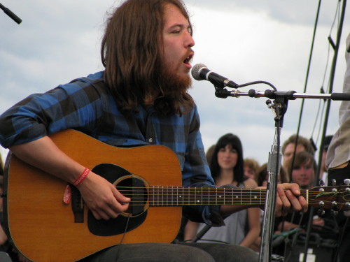
14It Ain't Me Babe
Robin Pecknold (Fleet Foxes) – BBC Session (2009)
orig. Bob Dylan
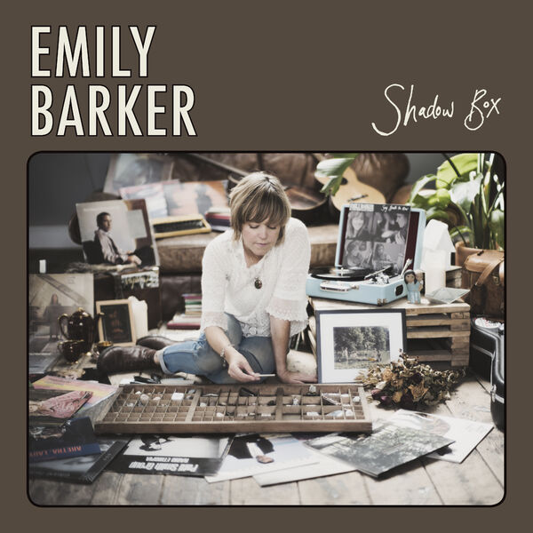
15Look Out For My Love (orig. Neil Young)
Emily Barker – Shadow Box (2020)
orig. Live at Union Chapel
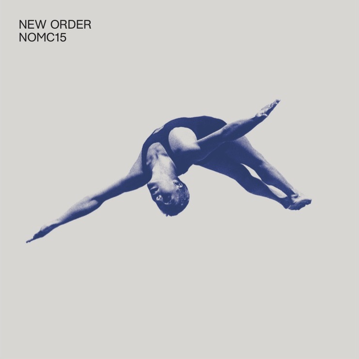
16Love Will Tear Us Apart (orig. Joy Division)
New Order – NOMC15 (2017)
orig. Live
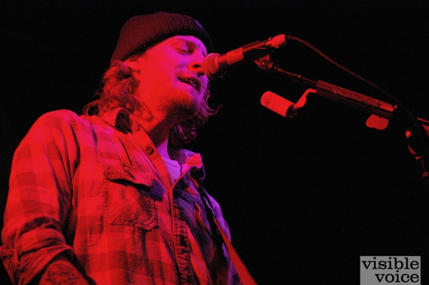
17Portland (orig. The Replacements)
Deer Tick (John + Ian Solo) – Live at Middle East Upstairs 1.14.11 (2011)
orig. Live
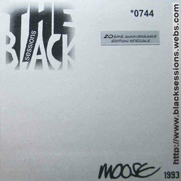
18Everybody's Talkin'
Moose – Black Session (9-27-93) (1993)
orig. Harry Nilsson
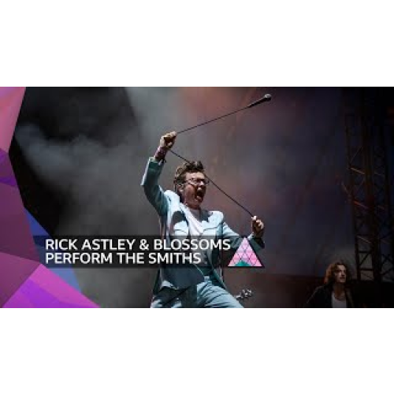
19There Is A Light That Never Goes Out (orig, The Smiths)
Rick Astley with Blossoms – Glastonbury 2023 (2025)
orig. Live
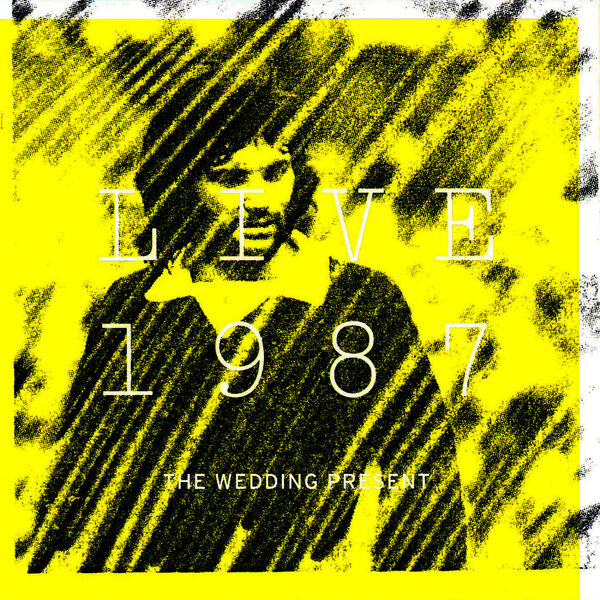
20It's Not Unusual (orig. Tom Jones)
The Wedding Present – Live 1987 (2007)
orig. Live
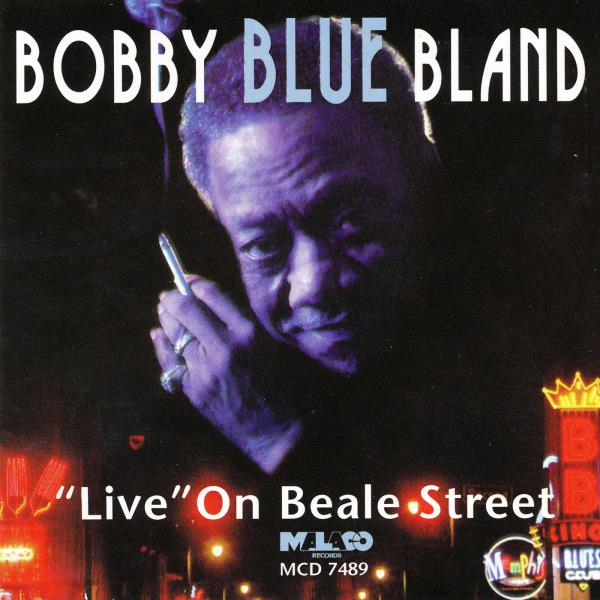
21Ain't No Sunshine When She's Gone
Bobby "Blue" Bland – "Live" On Beale Street (1998)
orig. Bill Withers